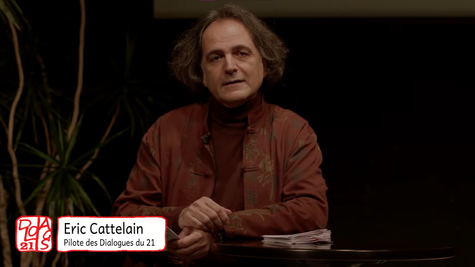
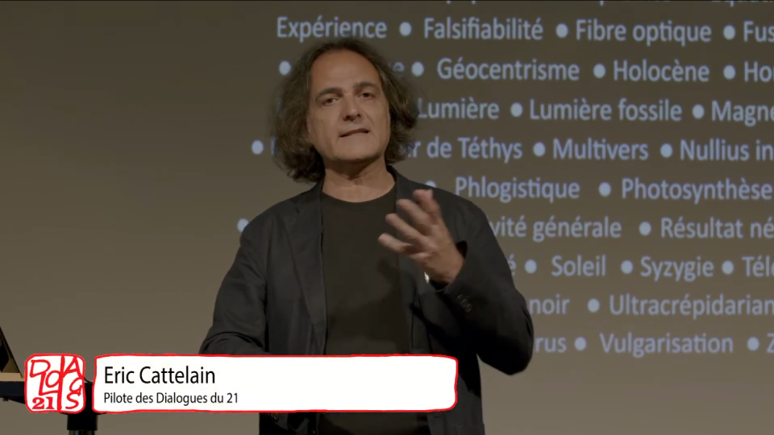
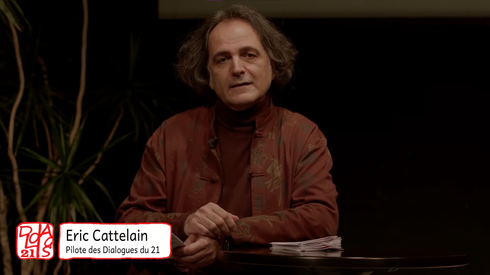
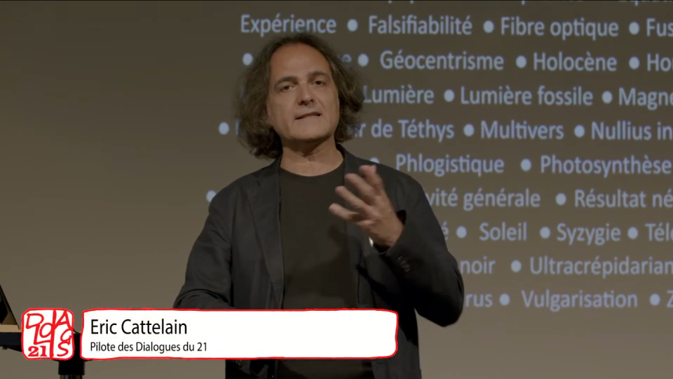
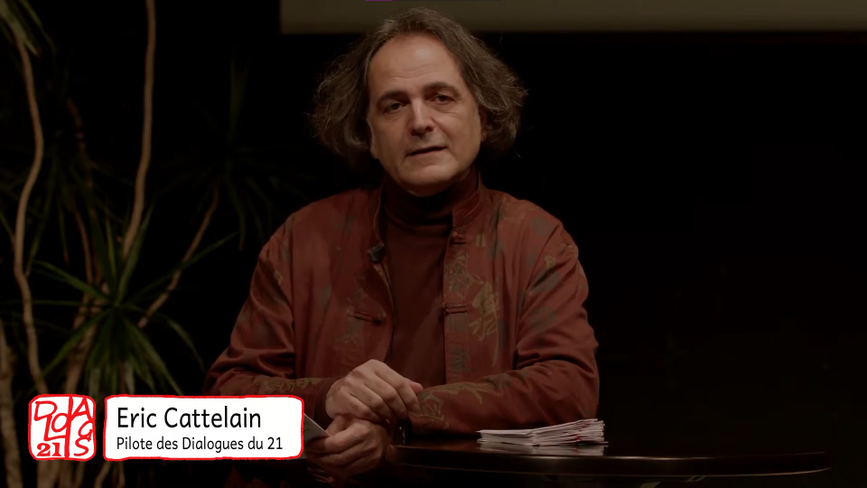
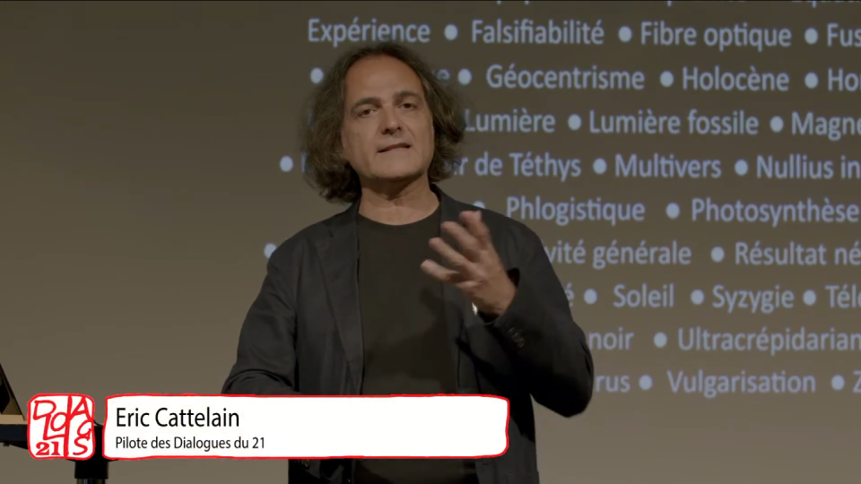
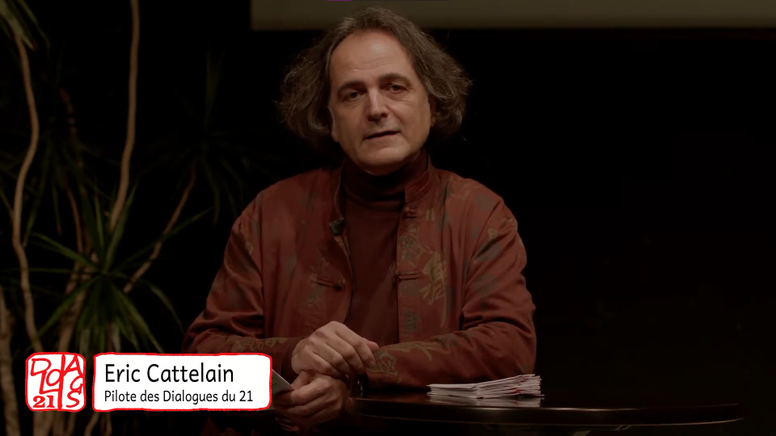
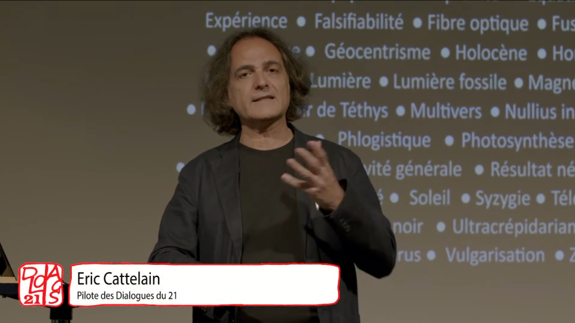

↑


↑ HOME ↑
↑ AUDIOVISUEL ↑
<< HOME
< AUDIOVISUEL
AUDIO
VISUEL
↑


X
AUTRES
CulturalWave, Pilote
Pilote d’émission réalisé par The Graceful Six, une équipe temporaire pour le projet SHOWTIME du cursus MMI à l’IUT Bordeaux Montaigne.
Cette émission présente un style musical atypique chaque épisode, et le premier débute avec la VaporWave.
Rôles: Rédacteur, Correcteur, Journaliste, Masquotte, Voix off, Cadreur, Monteur
X
AUTRES
MysteryGang, Vous zététique ?
Pilote d’émission radio intitulée MysteryGang dont le premier épisode s’intitule « Vous zététique ? » durant le projet WEB RADIO du cursus MMI de l’IUT Bordeaux Montaigne.
Cette émission parle de divers faits méconnus de la plupart, dont la zététique dans le pilote. Un voyage dans le monde de la réflexion, de l’esprit critique et d’une rigueur scientifique dans la recherche du faux et du vrai.
Rôles: Présentateur, rédacteur, journaliste
X
AUTRES
Dialogues du 21
Acte 3
Organisation du Live Stream de la conférence Acte 3 des Dialogues du 21, diffusée le 18/02/22.
Nous ferons honneur à la diversité culturelle et linguistique mondiale à travers plusieurs invités qui viendront nous faire voyager de leurs récits.
Rôles: Co-organisateur du live, assistant technique, chargé du making off, gestion des invités
X
AUTRES
Dialogues du 21
Acte 4
Organisation du Live Stream de la conférence Acte 4 des Dialogues du 21, diffusée le 21/05/22.
Des hommes et femmes de science sont cette fois-ci appelés à questionner et illustrer des mots, des histoires, afin d’en parcourir les chemins, de leur création à leurs usages, savants ou non.
Rôles: Co-organisateur du live, assistant technique, gestion des invités